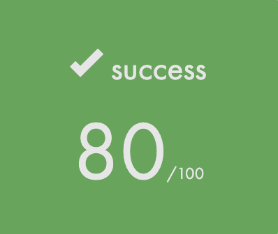
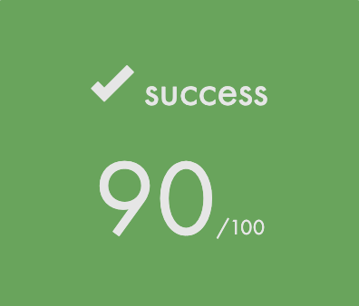

|
CPP Modules 1.0
|

|
|
CPP Modules 1.0
|
|
このリポジトリは、github.ioでドキュメント公開するためのリポジトリです。
公開ドキュメントのリポジトリは github.com/kamitsui/CPP_Modulesにあります。
CPP Modules は、C++らしさを学ぶの課題です。
オブジェクト指向のプログラミングについて概念を理解して、C++98の機能を使ってプログラミングします。
C言語の用に標準ライブラリなどの関数を再実装するわけではなく、すでにC++にあるライブラリは使えます。
ただし、いくつか制限があります。
No Containers(vetor/list/map/and so forth), and No Algorithms(<algorithm> header) | CPP00 | CPP01 | CPP02 | CPP03 | CPP04 |
|---|---|---|---|---|
|  2025/04/22 ~ 04/ |  2025/04/ ~ 04/26 | 2025/04/26 ~ | 2025/MM/DD ~ MM/DD | 2025/MM/DD ~ MM/DD |
| CPP05 | CPP06 | CPP07 | CPP08 | CPP09 |
|---|---|---|---|---|
| 2025/MM/DD ~ MM/DD | 2025/MM/DD ~ MM/DD | 2025/MM/DD ~ MM/DD | 2025/MM/DD ~ MM/DD | 2025/MM/DD ~ MM/DD |
C++ Module 00
名前空間、クラス、メンバ変数、stdioストリーム、初期化リスト、stacic、const、その他基本的なもの
C++ Module 01
メモリ割り当て、メンバへのポインタ, 参照と
switch文Link : intra, Github, Document Page
C++ Module 02
クラスのより深い機能（コンストラクタ、デストラクタ、コピーコンストラクタなど）を扱います。
Link : intra, [Github](), [Document Page]()
C++ Module 03
継承とポリモーフィズムについて学習します。
Link : intra, [Github](), [Document Page]()
C++ Module 04
テンプレートについて学びます。
Link : intra, [Github](), [Document Page]()
C++ Module 05
Link : intra, [Github](), [Document Page]()
C++ Module 06
Link : intra, [Github](), [Document Page]()
C++ Module 07
Link : intra, [Github](), [Document Page]()
C++ Module 08
例外処理について扱います。
Link : intra, [Github](), [Document Page]()
C++ Module 09
コンテナとアルゴリズム（STL）の基本的な使い方を学びます。
Link : intra, [Github](), [Document Page]()
C++ Getting Start
練習用のリポジトリ
cpp0x_base
C++ Module のリポジトリ作成するためのテンプレートリポジトリ Link : github.com/kamitsui/cpp0x_base
Staticryptについて
htmlファイルにJavaScriptコードを埋め込み、パスワードロックするツール
もしSubjectのページをパスワード保護したい場合に使えます。